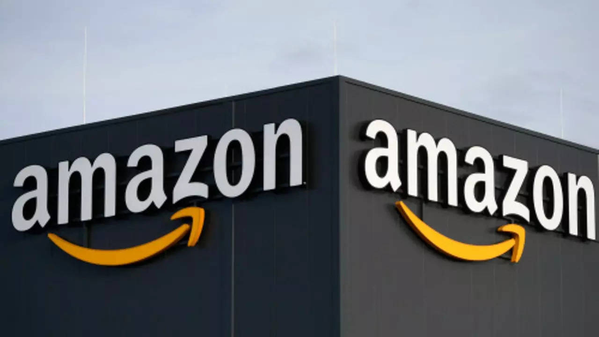

 Amazon.com, Inc.[1] (/ˈæməzɒn/ AM-ə-zon UK also /ˈæməzən/ AM-ə-zən) is an American multinational technology company focusing on e-commerce, cloud computing, online advertising, digital streaming, and artificial intelligence. It has been often referred to as "one of the most influential economic and cultural forces in the world",[5] and is often regarded as one of the world's most valuable brands.[6] It is considered as one of the Big Five American technology companies, alongside Alphabet (parent company of Google), Apple, Meta (formerly Facebook Inc.) and Microsoft. Amazon was founded by Jeff Bezos from his garage in Bellevue, Washington,[7] on July 5, 1994. Initially an online marketplace for books, it has expanded into a multitude of product categories, a strategy that has earned it the moniker The Everything Store.[8] It has multiple subsidiaries including Amazon Web Services (cloud computing), Zoox (autonomous vehicles), Kuiper Systems (satellite Internet), and Amazon Lab126 (computer hardware R&D). Its other subsidiaries include Ring, Twitch, IMDb, and Whole Foods Market. Its acquisition of Whole Foods in August 2017 for US$13.4 billion substantially increased its footprint as a physical retailer.[9] Amazon has earned a reputation as a disruptor of well-established industries through technological innovation and "aggressive" reinvestment of profits into capital expenditures.[10][11][12][13] As of 2023, it is the world's largest online retailer and marketplace, smart speaker provider, cloud computing service through AWS,[14] live-streaming service through Twitch, and Internet company as measured by revenue and market share.[15] In 2021, it surpassed Walmart as the world's largest retailer outside of China, driven in large part by its paid subscription plan, Amazon Prime, which has over 200 million subscribers worldwide.[16][17] It is the second-largest private employer in the United States.[18] Amazon also distributes a variety of downloadable and streaming content through its Amazon Prime Video, Amazon Music, Twitch, and Audible units. It publishes books through its publishing arm, Amazon Publishing, film and television content through Amazon Studios, and has been the owner of film and television studio Metro-Goldwyn-Mayer since March 2022. It also produces consumer electronics—most notably, Kindle e-readers, Echo devices, Fire tablets, and Fire TVs. Amazon has been criticized for customer data collection practices,[19] a toxic work culture,[20] tax avoidance,[21][22] and anti-competitive behavior.